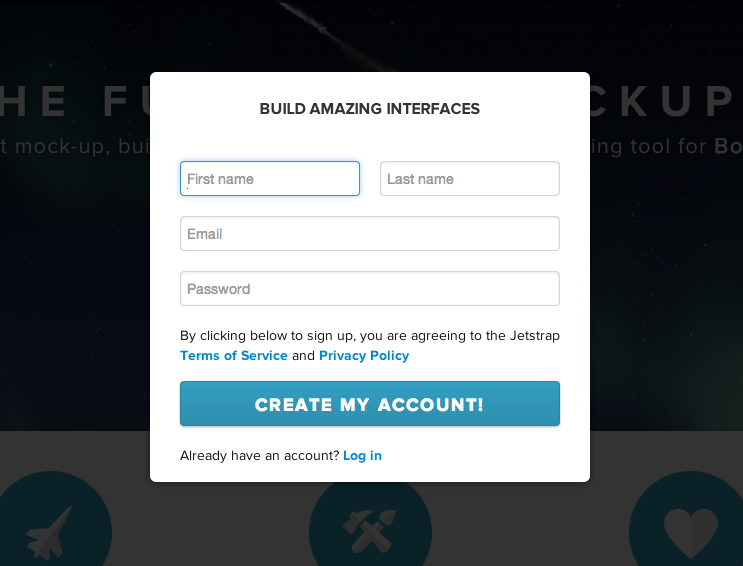
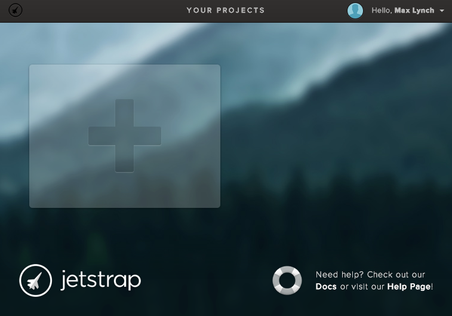
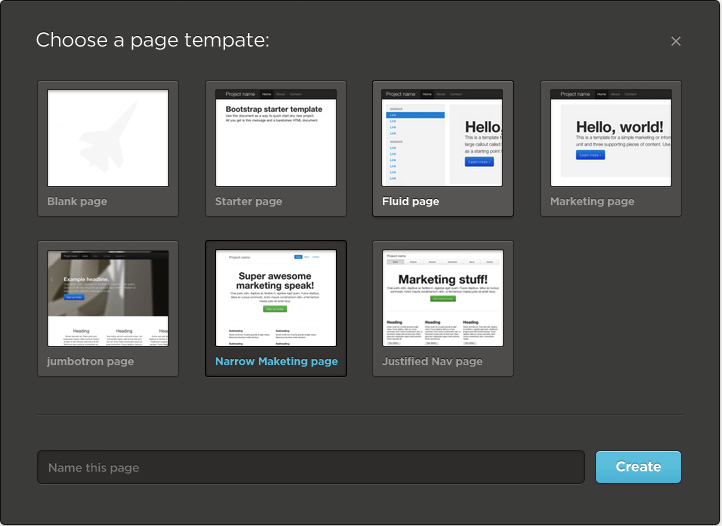

Jetstrap was created with the goal of making it easier for people to learn how to build websites with Twitter Bootstrap and HTML5. We wanted to make it possible to quickly build Twitter Bootstrap pages without having to code or study the Bootstrap Docs
Jetstrap makes it easy to build Bootstrap sites and pages by just dragging and dropping: you don't have to code at all if you don't want to.
If you are new to Bootstrap, follow these three steps to get up and running and start building real Bootstrap pages in no-time:
First, create an account. It's free to get started.

In Jetstrap, a Project is a group of related screens, or "pages". For example, you might have a Project for a new website you are building, or for a client project. To create one, hit the big "plus" item:

In Jetstrap, a Screen is just a single Twitter Bootstrap page. You can create it with one of six different templates, or start from scratch. The templates are taken from the Bootstrap Getting Started examples:

Now you are ready to build! In Jetstrap, it's easy to build with Bootstrap: just drag a component from the left side into the middle section.